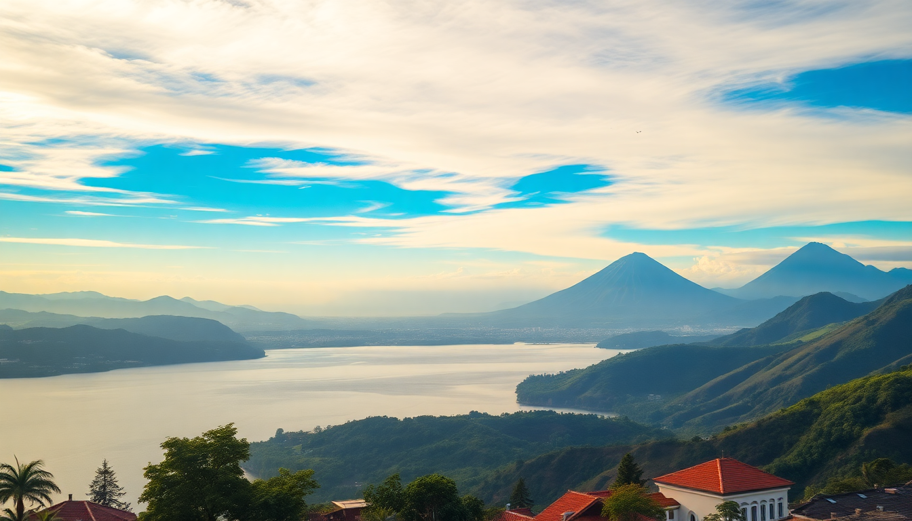

Best Day Trips from San José: Volcanoes & Coast

I landed in San José with three free days and wanted to see more than the city’s central market. After talking to locals and testing routes myself, I found three day trips that actually work logistically—without needing a rental car or a 4 a.m. wake-up. Here’s what I learned about hitting Arenal, Poás, and Manuel Antonio from the capital.
Are Day Trips from San José Actually Feasible?
Yes, but with trade-offs. Costa Rica’s roads are slow—curvy two-lane highways with frequent truck traffic. Distances look short on a map but take 2.5 to 4 hours each way. I planned one day per destination, not a multi-stop dash.
- Arenal / La Fortuna: 3 to 3.5 hours by shared shuttle or rental car. The drive goes through the Braulio Carrillo National Park, then past cattle farms. I used Interbus for a door-to-door shuttle from my hotel in Barrio Escalante.
- Poás Volcano: 1.5 hours from downtown San José if you leave before 7 a.m. The road climbs from Alajuela into cloud forest—paved but foggy.
- Manuel Antonio: 3 to 4 hours depending on traffic near Quepos. The last stretch is a single-lane road through palm plantations. I booked a shared van through Tropical Tours; it left at 6 a.m. from the Gran Hotel Costa Rica.
What’s the Best Way to See Arenal Volcano in One Day?
I left San José at 6:30 a.m. and reached La Fortuna by 10 a.m. The volcano is often clouded by midday, so I went straight to the trails.
- Arenal Volcano National Park — I paid the $15 entrance fee and hiked the Colada basáltica trail. It’s a flat 2.5 km loop through old lava flows. Views of the conical peak were clear until 11 a.m. then clouds rolled in.
- El Salto Rope Swing — A free swimming spot on the Río Fortuna. Locals jump from a rope swing into cool green water. I parked near the bridge and spent 30 minutes there.
- Lunch at Soda La Hormiga — A soda (local diner) on the main road. The casado with grilled chicken and fried plantains cost $7. No frills, but the gallo pinto was the best I had in Costa Rica.
- Hot springs at Los Lagos — I skipped the big resorts (Tabacón, Baldi) and paid $20 for day-pass access to Los Lagos thermal pools. They’re less crowded mid-afternoon and have a swim-up bar.
- Return shuttle — I booked a 4 p.m. shuttle back to San José. Arrived around 7:30 p.m. tired but satisfied.
One caveat: if the volcano is socked in (common June–November), skip the park and head straight to the hot springs. The view isn’t worth the entry fee.
How Do You Beat the Crowds at Poás Volcano?
Poás is the most accessible day trip from San José, but it’s also the most touristy. The crater was active in 2023, so the park sometimes closes without notice. I checked the SINAC (national parks) website the night before.
- Leave by 6 a.m. from San José. I drove myself in a rental from Adobe Rent a Car (they have an office near the airport). By 7:30 a.m. I was at the park entrance.
- Main crater overlook — The viewing platform is a 500-meter paved walk from the visitor center. On clear mornings, you see the turquoise sulfur lake and fumaroles. By 9 a.m., the parking lot was full and tour buses arrived.
- Botos Lagoon Trail — A 1.5 km loop through dwarf cloud forest to an extinct crater lake. I saw quetzals (briefly) and hummingbirds near the trailhead. This trail is less crowded than the main crater.
- Lunch at La Casa del Café — A small coffee shop in Sarchí on the way back. I had a chorreada (cheese and corn pancake) and a cup of locally grown coffee. The oxcart factory across the street sells painted souvenirs—touristy but worth a 10-minute browse.
- Return by 1 p.m. — The fog usually rolls in by late morning. I was back in San José by 2:30 p.m. with time for a nap.
Is Manuel Antonio Doable as a Day Trip from San José?
Barely. It’s the longest drive of the three, and the park closes at 4 p.m. I did it, but I’d only recommend it if you’re comfortable with a 12-hour day.
- 6 a.m. van pickup from San José. The road south on Route 27 is tolled and fast until Orotina, then it slows through Jacó and coastal towns. I arrived at Manuel Antonio National Park by 9:30 a.m.
- Park entrance — $18 for foreigners. I hired a guide at the gate for $25. He spotted a sloth, two toucans, and a troop of capuchin monkeys within the first hour. Worth the money.
- Playa Espadilla Sur — The park’s main beach. I swam for 30 minutes between guided walks. Water was warm, but currents were strong—stay between the flags.
- Lunch at El Avión — A restaurant built around a rusted C-123 cargo plane (a relic from the Iran-Contra affair). The ceviche mixto was fresh, but the gimmick outweighs the food. I’d skip it next time and eat at Soda El Pueblo in Quepos for cheaper, better gallo pinto.
- Return by 3 p.m. — I left the park at 2 p.m. to avoid the worst of the Quepos traffic. Got back to San José at 6:30 p.m. after a stop for coffee at Café Milagro in Jacó.
If you have two days, stay overnight in Quepos at Hotel Si Como No. The day trip is a grind.
Which Day Trip Should You Skip If You’re Short on Time?
Poás is the easiest logistically, but it’s the least rewarding. The crater is impressive for 20 minutes, then you’re done. I’d skip it if I had only one day and pick Arenal instead. Manuel Antonio is a better experience but demands the most travel time.
- Best for first-timers: Arenal. You get volcano views, hot springs, and a small-town feel.
- Best for wildlife: Manuel Antonio. You’ll see more animals in two hours than a week in the cloud forest.
- Best for a half-day: Poás. You can be back in San José by lunch if you start early.
What Should You Pack for These Day Trips?
I learned the hard way. Costa Rica’s microclimates mean you’ll freeze at Poás then sweat in Manuel Antonio.
- Rain jacket — Not an umbrella. The wind at Poás makes umbrellas useless. I used a Columbia packable shell.
- Swimsuit and quick-dry towel — Even if you skip hot springs, Manuel Antonio’s beach is worth a dip.
- Cash — Many sodas and park entrances don’t take cards. I carried ₡20,000 colones ($35) for small purchases.
- Sunscreen and bug spray — The sun at sea level is brutal. Mosquitos were bad near Quepos after rain.
- Water bottle — Tap water in San José and La Fortuna is safe to drink. Refill at your hotel.
FAQ
Is it safe to drive from San José to these destinations? Yes, if you’re comfortable with mountain roads, potholes, and occasional fog. I drove to Poás and found the route straightforward. For Arenal and Manuel Antonio, I used shuttles because the return drive at dusk through Cerro de la Muerte (Mountain of Death) can be nerve-wracking in rain. Stick to daylight hours and avoid driving after 5 p.m.
Can you combine two destinations in one day? Not comfortably. I tried a Poás + La Paz Waterfall combo and felt rushed. The waterfall gardens are 20 minutes from Poás, but the entrance is $45 and feels like a commercial zoo. I’d pick one destination and do it well.
What’s the cheapest way to book these trips? For Arenal, I booked the Interbus shuttle directly for $45 round trip. For Manuel Antonio, the shared van was $55. Poás I drove myself because rental cars from Adobe cost $35/day with insurance included. Tour companies in San José charge $80–$120 for the same routes—skip them and book transport only.
Conclusion
- Arenal is the best all-around day trip: volcano, hot springs, and a real town with good food.
- Poás works for a quick morning outing but feels underwhelming if clouds cover the crater.
- Manuel Antonio delivers wildlife and beaches but requires a long, tiring day of driving.
- Use shared shuttles (Interbus, Tropical Tours) instead of group tours to save money and control your schedule.
- Leave before 7 a.m. for every trip—afternoon traffic and clouds ruin the experience.